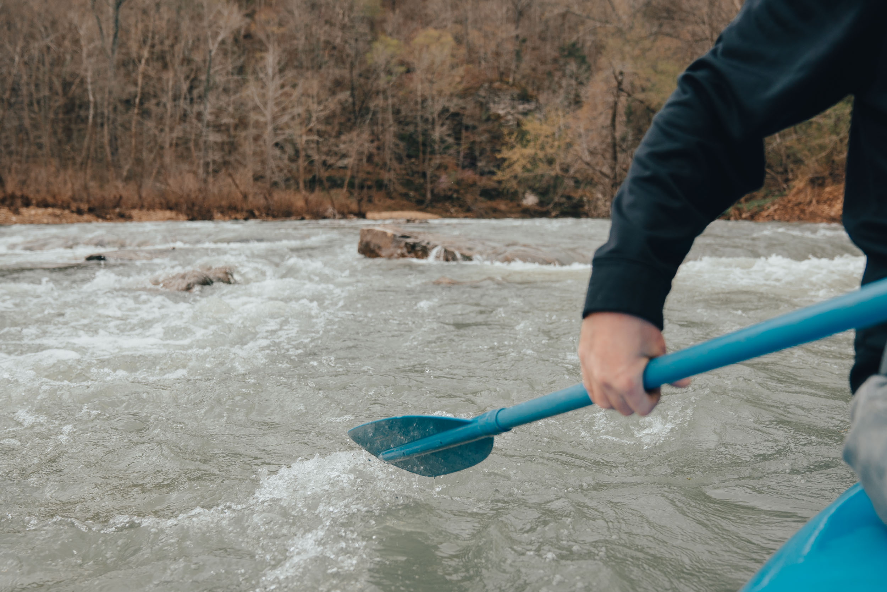
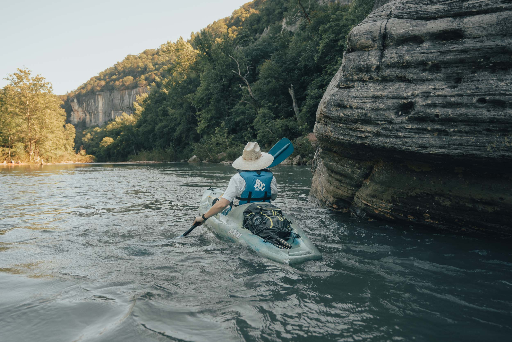
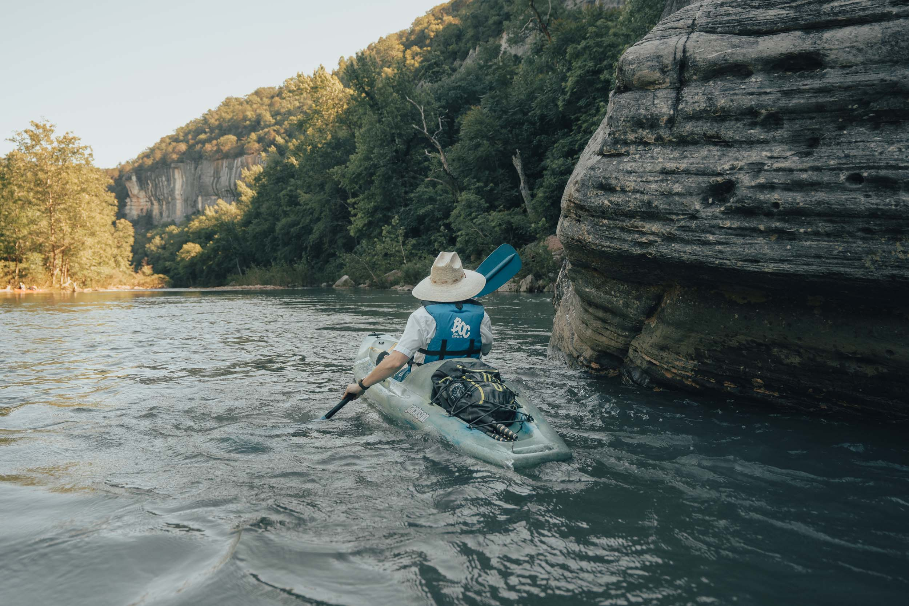
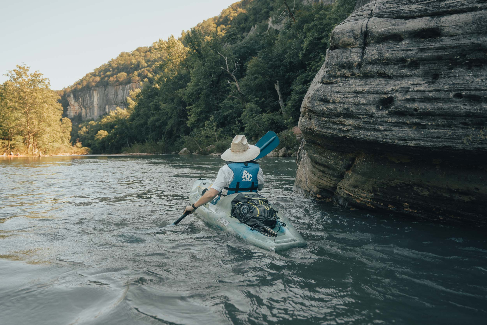

Here at Ozark Rush we encourage you and the whole family to come on down and experience nature first hard on the Buffalo river. Feel free to access wilderness activities such as canoe and cabin rental, Mountain Biking, Rock Climbing, and Hiking. Here we want to share our love for the great outdoors with you and your loved ones.
BRING THE WHOLE HERD DOWN TO THE BUFFALO

 


About Ozark Rush Adventures
Ozark Rush Adventures is a family resort that's located on the Buffalo River in North East Arkansas. The Buffalo is the very first National river established in 1972. Flowing freely for 135 miles and is one of the few remaining undammed rivers in the lower 48 states.The Buffalo National River is one of the most popular attractions in Arkansas, and averages 800,000 visitors each year.
Ozark Rush was founded by Thomas Wallace and Bruce Bauer. Established in 2021 Ozark Rush Adventures was made so that love ones can come and experience the great outdoors and the love of nature that Thomasand Bruce have
ozark rush is a new outdoors experience in Jasper, AR situated on the pristine Buffalo National River. One of the few remaining undammed rivers in the country, the Buffalo's shallow waters, beautiful surrounding wilderness, and picturesque bluffs make for an unmatched outdoor getaway.
Whether you choose to float the river, hike or bike along the many trails in the Ozark region, or just to relax on the porch of one of our cabins and soak up the sunshine, Ozark Rush is here to make that happen. Our outfitters was founded in 2021 by Bruce Bauer and Thomas Wallace with the goal of creating a haven in the Ozarks that respects the land around it as much as it provides comfort to the travelers that visit. We source as much as we can from right here in Newton County, from the fresh fruit we put on our tables right down to the canoes we use to float the river.
Our history with the outdoors runs deep. One of our greatest joys since purchasing this property has been sharing the land and the water with our friends and family. With Ozark Rush, we want to open that up to more than just our friends and family.
The Wildlife
Due to the large area or woods and water this is a very comman place to see mant different animals